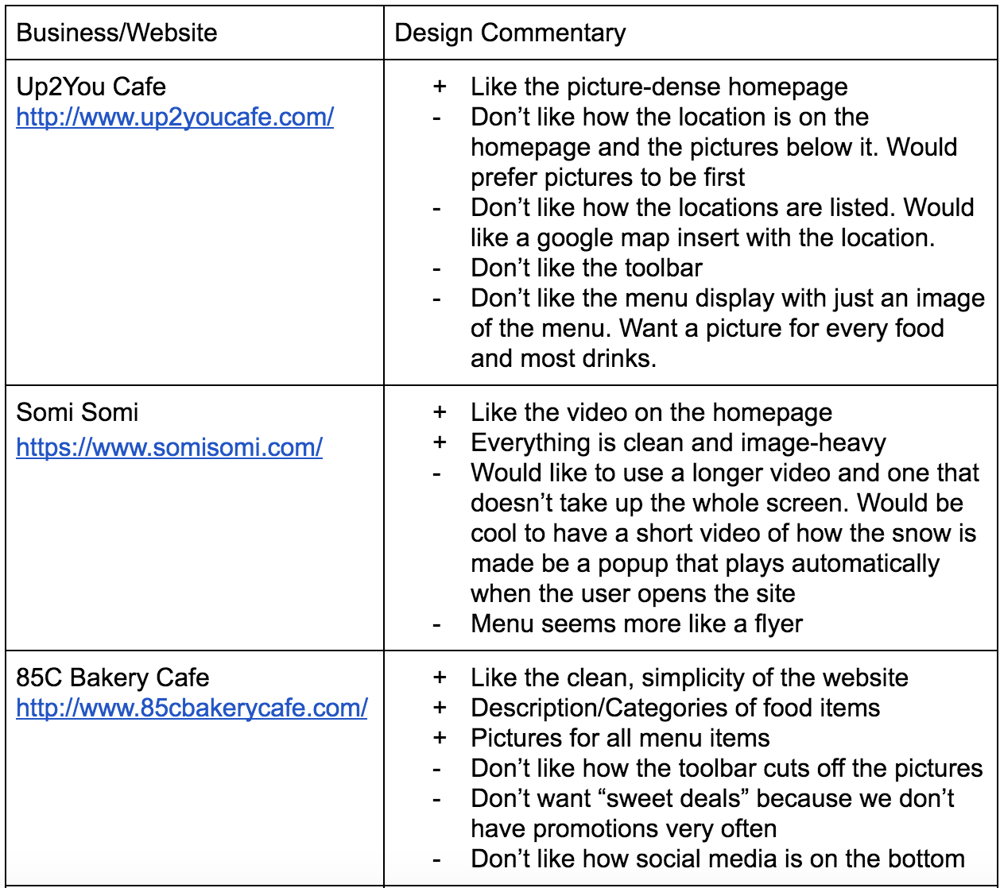
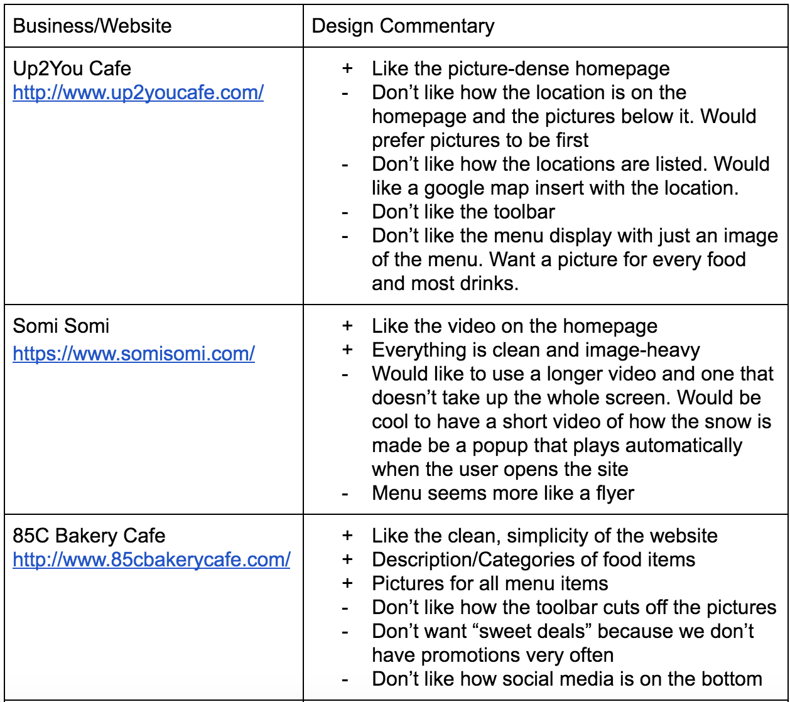

-21°C Snowflake
Introduction For a professional website design course, my team of 4 was able to successfully create a website design for a client with an emphasis on mobile-first. This was done over a period of about 10 weeks where we identified our client needs, interviewed customers, made personas, created a mood board, made a prototype, iterated on the prototype, and created a final design which was coded using a heavily modified bootstrap template.
Process The first step was to talk to our client. We wanted our first conversation to do 3 things. The first was explore what made their business or their products unique. The second was to discuss the kind of mood and functionalities they wanted their website to have. Lastly, we wanted to go through a few websites of other cafes that had similar offerings to discuss what they liked and didn’t like about the websites.
 
An example of a shop from a bakery (left), Client's commentary about the websites (right)

An example of a shop from a bakery (left), Client's commentary about the websites (right)After talking to our client, we decided to interview 10 customers. This would do 2 things. The first is validate if what the owner thought about the cafe’s branding and appeal was correct. Additionally, it would give us a better idea about what their customers wanted to see and would help us decided the website’s functionality.
After interviewing, we created personas to better empathize with our users. Doing this also allowed us to come up with specific use cases for how each persona would use the website. One of the personas I made can be seen below.
From there, we created a summary table which included all the use cases, which personas would use them, and how often the scenario arose.

 Example of a use case (left), use case summary (right)
Example of a use case (left), use case summary (right)Lastly, we created a feature and functionality table to pinpoint what the client and our personas wanted for the website. This helped us to determine what functionalities we should include and helped ground our designs so they were designed for our users and client.
 Feature & functionality table
Feature & functionality tableOnce we had a good idea about what functionalities and features we wanted to include, we moved onto understanding the competition and branding. We did a thorough competitive analysis of 4 websites with an emphasis on branding, functionality, content, navigation, site architecture, and unique ideas. I’ve included the full competitive analysis.
Then we created a mood board to better visualize how we wanted to convey the website’s mood. We showed this to our client and moved onto sketching.
 Mood Board
Mood BoardNow it was time to start drawing. We sketched examples of how we might want to design the website and discussed placement of buttons, images etc. Some sketches I did can be seen below.
Then we moved onto wireframing. We created the screens on Figma in order to collaborate. An example of a mobile and desktop screen and analysis can be seen below.
Then we created a clickable prototype using InVision for both the mobile prototype and desktop prototype. This allowed us to really show our client how the website would look and feel. We then discussed any additional changes.
Now it was time to code. We found a bootstrap template online and heavily modified it. We created a first iteration of the website using placeholder images. We then got feedback from our professor and TA’s. We modified the website to incorporate the feedback.
From there, we scheduled time to come into the cafe so we could take pictures of the food and the cafe’s environment. Although this took a bit of time, we ended up having to do this as most of the pictures that were given to us were lower in resolution or taken in portrait and hard to crop. One of our team members used his professional camera to take and edit the photos. After this, we incorporated all the images and cleaned up all the text on the website to make sure the language matched the branding. An example of screens for desktop and mobile can be seen below. Additionally, the functional -21°C Snowflake website can be found here .

 Mobile screen example (left), desktop screen example (right)
Mobile screen example (left), desktop screen example (right)